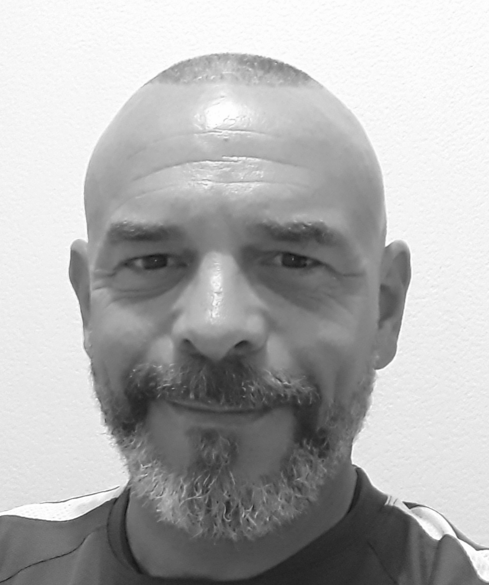

<section id="section-who">
  <div
    class="bg-gray-800 md:h-screen w-screen"
    style="
      background: linear-gradient(to right bottom, #1f2937 50%, #374151 50%);
    "
  >
    <div class="container mx-auto px-5 pt-6 pb-12 md:py-24">
      <div
        class="flex flex-col md:flex-row md:space-y-0 md:space-x-10 items-center"
      >
        <div class="flex-1 mt-6 md:mt-0 section-content leading-5">
          <p class="text-white border-l-8 border-primary pl-4 md:pl-8">
            Je m’appelle Stéphane, titulaire du SSIAP depuis plus de vingt ans,
            je suis une personne rigoureuse, organisée et bienveillante.
            <br /><br />
            Mon parcours professionnel au sein d’un Service de Sécurité Incendie
            dans le domaine aéroportuaire m’a naturellement destiné vers le
            milieu de l’évènementiel. <br /><br />
            Je propose mes services en qualité de SSIAP indépendant.
            <br /><br />
            Je serai ravi d’établir de nouvelles collaborations.
          </p>
          <button
            class="mt-10 px-5 py-3 bg-gradient-to-r from-red-400 to-primary text-white font-display text-lg rounded-md"
          >
            Me contacter
          </button>
        </div>
        <div
          class="order-first md:order-none w-32 h-32 md:w-1/3 shadow-2xl md:h-auto rounded-full md:rounded-md md:bg-gradient-to-br from-white via-gray-700 to-white md:p-2 md:self-start overflow-hidden"
        >
          
        </div>
      </div>
    </div>
  </div>
</section>
